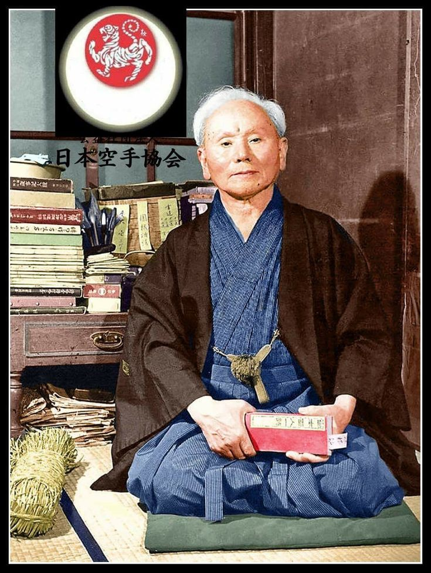
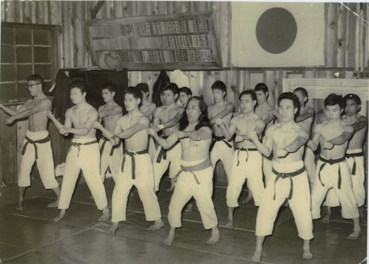
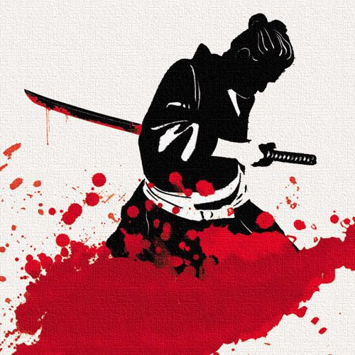
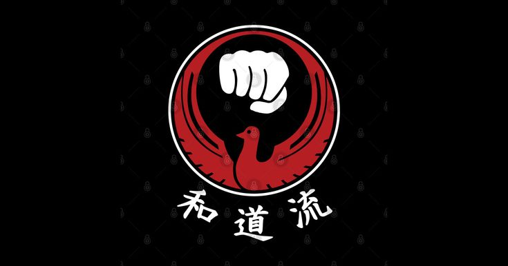

Quando o Karatê deixou Okinawa e chegou ao Japão continental, mestres com visões distintas fundaram escolas próprias — os estilos. Cada um preserva a essência da arte, mas a exprime com uma linguagem corporal única.

O estilo mais praticado no mundo, criado por Gichin Funakoshi. Caracteriza-se por movimentos lineares e poderosos, posturas baixas e amplas, e grande ênfase no kime — o foco máximo de energia no ponto de impacto. O treinamento é rigoroso e repetitivo, cultivando disciplina física e mental.
O nome "Shotokan" vem de "Shoto" — pseudônimo poético de Funakoshi, que significa "pinheiros balançando ao vento" — e "kan" (salão, casa). Seu kata emblemático é o Heian Shodan, praticado por iniciantes em todo o mundo.
Funakoshi · 1938 Kata: Heian Linear · Potente
Fundado por Chojun Miyagi, o Goju-Ryu (duro-suave) é um estilo que equilibra técnicas de força explosiva (go) com movimentos fluidos e circulares (ju). Fortemente influenciado pelo Kung Fu do sul da China, utiliza respiração controlada (ibuki) como elemento central do treinamento.
O kata Sanchin — três batalhas (corpo, mente e espírito) — é considerado o kata mais completo da tradição. O Goju-Ryu é um dos dois únicos estilos de Karatê reconhecidos pela Nippon Budokan.
Miyagi · 1930 Kata: Sanchin Circular · Respiratório
Criado por Kenwa Mabuni, o Shito-Ryu é o mais eclético dos quatro grandes estilos — uma síntese dos estilos de Shuri-te (velocidade, linearidade) e Naha-te (força, circularidade). O nome une os kanji dos sobrenomes de seus dois mestres: Itosu e Higaonna.
Possui o maior repertório de katas do Karatê: mais de 40 formas. Praticado amplamente no Japão ocidental (região de Osaka), é muito popular nas competições de kata pela riqueza e variedade técnica.
Mabuni · 1934 Kata: Bassai Dai Eclético · +40 Katas
O único dos quatro grandes estilos fundado por um mestre com formação em Jiu-Jitsu. Hironori Otsuka criou o Wado-Ryu ("caminho da paz") integrando os princípios de esquiva e aproveitamento da força do adversário do Jiu-Jitsu ao Karatê de Funakoshi.
Caracteriza-se por movimentos fluidos, deslocamentos rápidos e elegantes, e técnicas de agarrão. É considerado o mais "suave" dos quatro estilos principais, priorizando harmonia e economia de movimento sobre força bruta.
Otsuka · 1939 Kata: Kushanku Fluido · Esquiva"Assim como diferentes rios chegam ao mesmo oceano, os quatro grandes estilos do Karatê compartilham uma única essência: o aperfeiçoamento humano através da arte marcial."